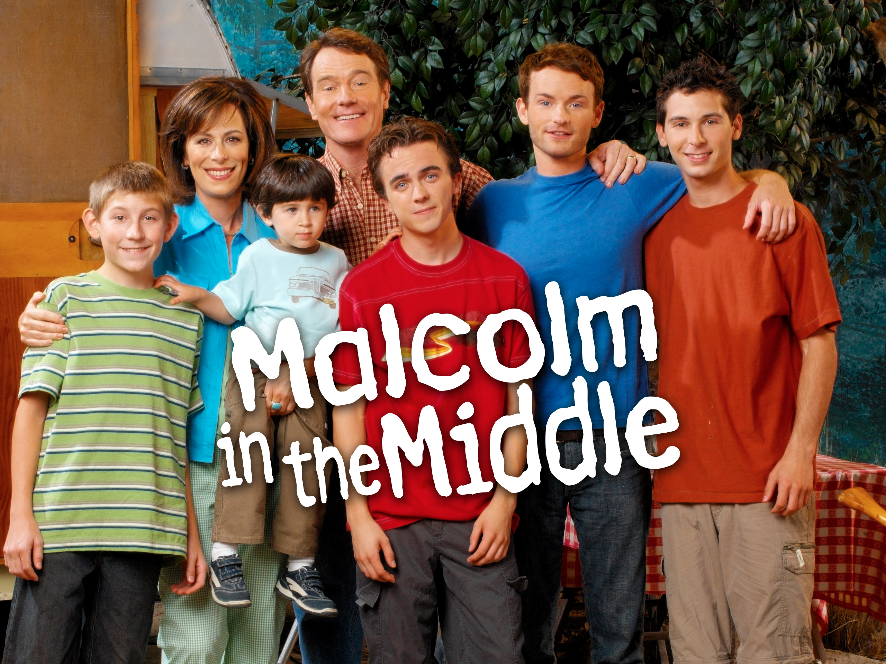
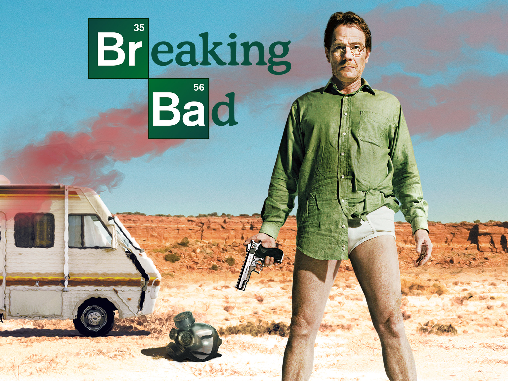

Las mejores sitcoms
Top de Irving
3. The office

Es una serie de televisión estadounidense de humor ambientada en una oficina regional
de venta de papel radicada en la localidad de Scranton, en Pensilvania (Estados Unidos).
Adaptada a partir de la serie británica del mismo nombre, se estrenó en la cadena de
televisión estadounidense National Broadcasting Company (NBC) el 24 de marzo de 2005.
Ha ganado los premios Primetime Emmy y Peabody.
Aunque se trata de una obra de ficción, la grabación adopta el formato de falso documental,
en el sentido de que los actores a veces miran a cámara e, incluso, se dirigen directamente
a ella comentando algunas escenas.
2. Friends

Es una serie de televisión estadounidense creada y producida por Marta Kauffman y David
Crane. Se emitió por primera vez el 22 de septiembre de 1994 por la cadena NBC y duró
hasta el 6 de mayo de 2004.
La serie trata sobre la vida de un grupo de amigos —Chandler Bing, Phoebe Buffay, Mónica
Geller, Ross Geller, Rachel Green y Joey Tribbiani— que residen en Manhattan, Nueva York.
Suceden tanto buenos como malos momentos, pero con una crítica cómica a los hechos más
trascendentales de la actualidad. Friends es una comedia de situación que trata temas del
mundo real, a través del humor y de las risas, una oda divertida a la risa, a la amistad,
el amor y la vida en la lucha dura por salir adelante a través de lo personal y lo
profesional, en la que se nos recuerda que con buenas personas a nuestro lado vamos a
estar bien.
Todas las temporadas tienen en promedio 24 o 25 capítulos, excepto la décima que tuvo solo
18 capítulos, así que me deben 6 capítulos.
1. Malcolm in the Middle

Creada por Linwood Boomer de la cadena FOX. La serie comenzó a transmitirse el 9 de
enero de 2000 y finalizó el 14 de mayo de 2006, luego de siete temporadas y 151 episodios.
La serie recibió elogios de la crítica, y ganó un Peabody, siete premios Emmy, un Grammy
y fue siete veces nominada al Globo de Oro.
El show es protagonizado por Frankie Muniz como Malcolm, el tercero de cuatro
(después cinco) hermanos, sus hermanos Dewey (Erik Per Sullivan), de 7 años y Reese
(Justin Berfield), de 13 años y sus padres, Lois (Jane Kaczmarek) y Hal (Bryan Cranston).
El hermano mayor, Francis (Christopher Masterson), de 16 años, fue enviado a la escuela
militar, dejando a Malcolm como el hermano mediano de la casa. En la cuarta temporada, el
personaje de Jamie (James y Lukas Rodríguez) fue añadido al show como el quinto hijo.
El show se centra en Malcolm lidiando con las dificultades de ser un adolescente y aguantar
las excentricidades de su vida y de su familia. La historia inicia cuando se descubre que
Malcolm, quien al igual que sus hermanos es calificado como un chico con tendencia al
desorden y la mala conducta, es un chico muy inteligente, con un IQ radicalmente por encima
de la media, por lo que es reasignado a la clase de superdotados, un salón lleno de chicos
nerds acostumbrados a ser abusados por los otros alumnos y consentidos por los profesores.
En las siguientes temporadas gradualmente se explora a otros miembros de la familia y sus
amigos en mayor profundidad, incluyendo a otros personajes como Craig Feldspar, el compañero de trabajo de Lois y el amigo de Malcolm, Stevie Kenarban o su padre, Abe.
Los mejores thrillers/crimen
3. La casa de papel

Es una serie de televisión española de drama criminal sobre atracos creada por Álex
Pina y producida por Atresmedia en sus inicios. La serie narra dos atracos largamente
preparados liderados por el Profesor (Álvaro Morte), uno a la Fábrica Nacional de Moneda
y Timbre y otro al Banco de España, contados desde la perspectiva de uno de los
atracadores, Tokio (Úrsula Corberó). La historia se cuenta en tiempo real y se
basa en un narrador poco confiable, flashbacks, saltos en el tiempo y motivaciones
ocultas de los personajes para lograr complejidad.
La serie está inspirada en el protocolo del atracador de bancos Willie Sutton, que
concibió más de 100 golpes mediante disfraces y engaños y sin necesidad de disparar a
nadie. Eso le reportó dos millones de dólares en las décadas de 1920-1950.
2. Your Honor
Your Honor es una miniserie de televisión estadounidense, estrenada en 2020, del canal
Showtime. Su primera temporada es una adaptación de la serie israelí, Kvodo. Ha sido creada por
Peter Moffat y está protagonizada por Bryan Cranston.
1. Breaking Bad

Es una serie de televisión estadounidense que se emitió entre 2008 y 2013, creada y producida
por Vince Gilligan. Narra la historia de Walter White (Bryan Cranston), un profesor de química con
problemas económicos a quien le diagnostican un cáncer de pulmón inoperable. Para pagar su tratamiento
y asegurar el futuro económico de su familia, comienza a cocinar y vender metanfetamina junto con
Jesse Pinkman (Aaron Paul), un antiguo alumno suyo. La serie, ambientada y producida en Albuquerque
(Nuevo México), se caracteriza por sus escenarios desérticos y por la tendencia en la historia de poner
a sus personajes en situaciones que aparentemente no tienen salida, lo que llevó a que su creador la
describa como un wéstern contemporáneo.
La serie se estrenó el 20 de enero de 2008 y es una producción de Sony Pictures Television.
En Estados Unidos y Canadá se emitió por la cadena AMC. La temporada final se dividió en
dos partes de ocho episodios cada una y se emitió en el transcurso de dos años: la primera
mitad se estrenó el 15 de julio de 2012 y concluyó el 2 de septiembre de 2012, mientras
que la segunda mitad se estrenó el 11 de agosto de 2013 y concluyó el 29 de septiembre del
mismo año, con un final altamente satisfactorio para los seguidores y la crítica.
Volver a inicio de la pagina